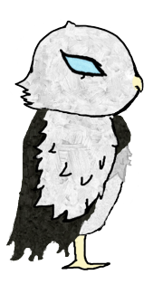
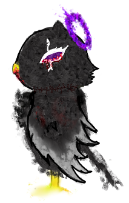

La plupart des membres de notre groupe n’ont pas d’expérience dans la conception de jeu vidéo. De ce fait, trouver un concept de jeu qui pourrait être fabriqué par des débutants de manière réaliste sans une idée du temps et de la difficulté de certains éléments a rendu la visualisation de notre projet complexe. Mais contre toute attente, nous avons réussi à trouver un concept satisfaisant et apprécié de tous. Notre jeu suit une chouette du nom de Nox. Nox est le chef d’un culte et se doit de partir en croisade contre un gourou ennemi ayant décimé sa secte. Il cherchera à éliminer son ennemi juré. Profitant alors pour rallier les membres de la secte ennemie. Tout en renforçant et garantissant la sécurité de sa secte naissante. Étant un plateformer, le jeu consistera essentiellement en progresser jusqu’à la fin des niveaux, et utiliser la mobilité du personnage pour avancer et trouver des secrets. Le jeu possède un mode multijoueur où les joueurs pourront inviter un ami localement pour vivre l’aventure de Nox à deux.

Lorsque la question du genre de jeu que nous allions créer a été soulevée, il nous est d’abord venu l’idée d’un jeu de stratégie ressemblant au jeu populaire Among Us. Cependant, au fur et à mesure que nous essayions de nous projeter dans cette idée, Helena a suggéré un changement de genre que nous avons rapidement adopté. Nous avons donc commencé à envisager un autre type de jeu : un plateformer. En échangeant sur l’univers du jeu, l’idée d’une histoire à propos d’un culte a fait l’unanimité. À ce stade, les idées ont fusé : que ce soit pour les mécaniques, le design, l’histoire ou les techniques, chacun y a ajouté quelque chose. Le concept final de notre jeu est donc un plateformer 2D ayant pour protagoniste un membre d’un culte partant à l’aventure dans un monde rempli de personnages ressemblant à des animaux anthropomorphiques, de monstres et de secrets interdits. Les premiers concepts de l’histoire et du contexte ont été principalement imaginés par Helena et Athina, puis repris par Amine, Dylan et Yusuf, qui ont également beaucoup apporté en termes de mécaniques au projet et au concept.
